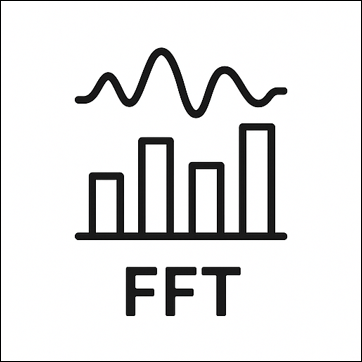
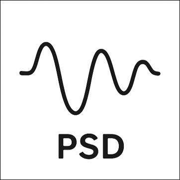
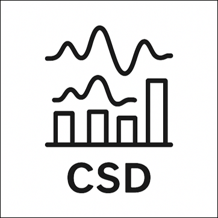
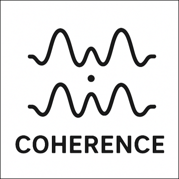

01
 See Details Developed for real-time monitoring of Soviet nuclear tests.
Uses the Cooley–Tukey algorithm.
By reducing computational complexity, it is widely used in real-time signal processing and digital systems.
02
 See Details Utilizes FFT.
Useful for analyzing the characteristics of signals containing noise.
Allows quantitative measurement of signal (energy) at each frequency.
02
 See Details Utilizes FFT.
Useful for analyzing the characteristics of signals containing noise.
Allows identification of common patterns in the frequency domain between two signals.
02
 See Details a statistical measure used in signal processing to analyze the relationship between two signals or data sets.
It provides a value between 0 and 1 for each frequency (higher value indicating stronger relation), and can be used to estimate causality in linear, ergodic systems.